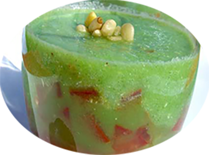

Verrines fraîcheur concombre-tomate

Pour 4 personnes
Préparation : 5 mn
Repos
Ingrédients
- 300 g de concombre
- 2 tomate
- 4 portions de vache qui rit ou autre fromage frais (Saint-Morêt,…)
- sel, poivre
- 1 pincée d’ail en poudre
- 1 cuillère à café d’herbes de Provence
- 1 petite cuillère à café de vinaigre balsamique
- 1 cuillère à soupe de pignons de pin
Recette
- Lavez le concombre puis mixez-le avec le fromage frais et les pignons de pin.
- Salez et poivrez à votre convenance.
- Lavez, ôtez le pédoncule de la tomate puis coupez-la en petits dés.
- Dans un bol, mélangez la concassée de tomate avec l’ail, les herbes de Provence, le vinaigre balsamique, salez et poivrez à convenance.
- Dans les verrines, disposez le concassé de tomate puis versez par-dessus le mélange concombre-fromage.
- Placez au réfrigérateur pendant 2 heures.
|